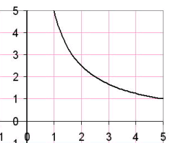
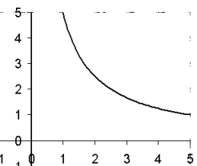
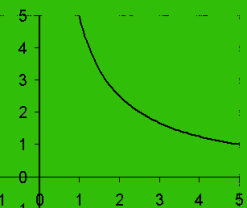

Engauge Digitizer - Discretizing
Engauge Digitizer - Discretizing
Engauge Digitizer - Discretizing
Engauge Digitizer - DiscretizingWhen an image is imported, Engauge Digitizer processes that image by converting each pixel into black or white. Since most images use black writing on a white background, the black pixels are assumed to represent curves, and the white pixels are assumed to represent the background. This process of converting color images into black foreground and white background is called discretizing. The resulting processed image can be automatically digitized using Segment Fill and Point Match.
Usually the default discretizing settings correctly differentiate the foreground from the background. For example, in the two images below, the original image on the left gets processed into the image on the right.
|  |  |
| Before discretizing | After discretizing |
However, an image that uses color might not get correctly digitized. In the two images below, the original image on the left is processed into the featureless image on the right. The relatively dark green was assumed to be part of the foreground.
|  | |
| Before discretizing | After discretizing |
Even a black-and-white image might be discretized in a manner that is not very helpful. In the two images below, the original image on the left is processed into the image on the right. One curve is so thin it has broken up into many unconnected short segments, and the other curve is so light that it has disappeared entirely! Neither curve will be recognized by the curve recognition algorithms in Engauge Digitizer.
 |
 |
| Before discretizing | After discretizing |
By simply changing the Discretizing settings, curves can often be extracted from color, low-contrast and low-resolution images. Such images are often produced by fax machines, microfiche, cheap scanners, and excessive enlarging on the copier.
Use the Settings/Discretizing dialog to experiment with various discretizing settings. You can get more information about the Discretizing dialog.